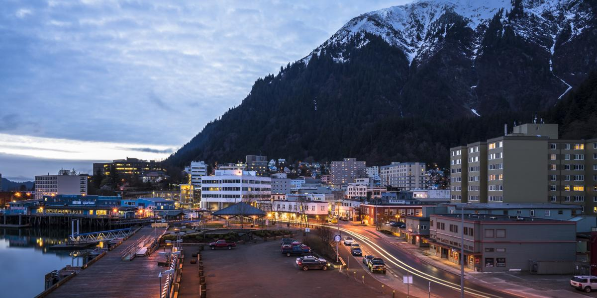

City Details
Juneau, Alaska (State Capital)
About Juneau, Alaska's Capital
Juneau embodies multiple identities: a town nestled among mountains, a coastal enclave, and the most visually stunning capital city in the United States. With its natural splendor, abundant wildlife,
and profound cultural significance, Juneau boasts a wealth of historical, artistic, musical, and Native heritage treasures. It caters to outdoor enthusiasts with its abundance of recreational opportunities, offers a haven for shoppers, and indulges food aficionados, signifying not only the state's capital but also the pulsating core of Southeast Alaska.
Population
Approximately 31,685
Year Incorporated
1900
Region
Southeast Alaska
Classification
Urban
Average US Income
$90,126
Income compared to rest of Alaska
Income levels in Juneau might be influenced by government and administrative employment, potentially higher than the state average.
How does this compare with other Alaskan Cities?
| City | Population | Year Incorporated | Region | Classification | Average US Income | Income compared to rest of Alaska |
|---|---|---|---|---|---|---|
| Anchorage | Approximately 287,145 | 1920 | Southcentral Alaska | Urban | $88,871 | Generally higher than the average income for the state. |
| Juneau | Approximately 31,685 | 1900 | Southeast Alaska | Urban | $90,126 | Income levels in Juneau might be influenced by government and administrative employment, potentially higher than the state average. |
| Skagway | Approximately 1,081 | 1900 | Southeast Alaska | Rural | $75,000 | Income levels in Skagway might vary due to its seasonal economy and tourism focus. |